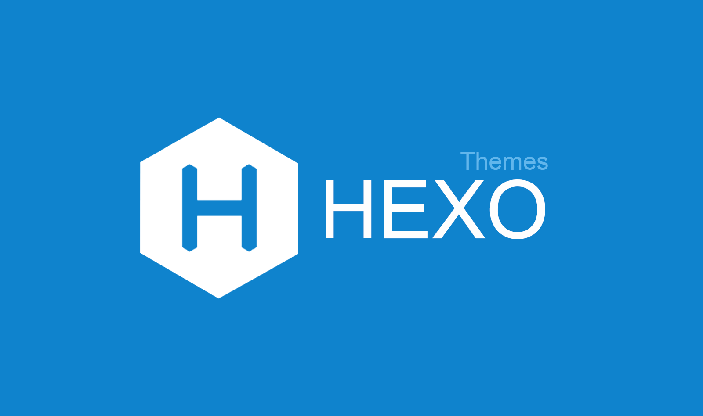
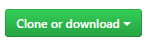

Hexo와 Github page로 만든 블로그에 Hexo 테마 적용하기

hexo와 github page를 이용하여 만든 블로그에 아름다움을 입혀보자. hexo는 jeykyll과 마찬가지로 블로그에 테마를 입힐 수 있다. hexo와 github page에 테마를 입히는 데 어려움은 없지만 테마가 개발자 개개인이 오픈소스로 만들어 제공하기 때문에 테마마다 사용이나 설정법이 약간 다를 수 있다.
hexo와 github page에 테마를 입히는 것이 hexo와 github page를 사용하여 블로그를 구축하는 것보다 어려울 수 있다. 일단 Document가 한글이 아니기 때문인데 먼저 이 포스트에서 하나의 테마를 잡아 적용을 해보고 원하는 테마를 골라서 별도로 적용해보자.
Hexo 테마 선택하기
먼저 테마가 어떤 것들이 있는지 살펴보자.
Hexo Theme에서 개발자들이 hexo를 사용하여 만든 테마 목록을 확인하고 다운받을 수 있다. 물론 우리도 hexo 테마를 제작할 수 있다. 당연히 시간과 노오오오오오오력이 바탕이 되어야 한다.
대충 둘러보면 알겠지만 그저 그런 테마들이 아니다. 모두 개인의 Identity가 들어가 있는 디자인뿐만 아니라 더 나아가 반응형 디자인으로 제작되어 있다. 이 반응형 디자인으로 인해 우리는 하나의 페이지를 모바일에서 볼 때와 PC 브라우저에서 볼 때 모두 다른 형태의 UI, UX로 보이는 것이다. 훌륭하다. 우린 그저 가져다 쓰기만 하면 된다.
이 훌륭한 테마 중 우리는 Clean Blog를 선택하고 적용해 보자. 이 Clean Blog는 매우 깔끔한 디자인을 가지고 있고 jekyll에서도 지원하는 블로그 테마이다.

Hexo 테마 설치하기
처음에 말했듯이 테마들은 모두 오픈소스로 되어있다. 그리고 그 오픈소스들은 github에 올려져 있다. 우리는 Hexo와 Github Page로 시작하는 블로그 만들기에서 블로그를 구축하며 대충 배워 본 git과 github사용 방법을 통해 테마 역시 github에서 git을 통해 다운 받을 것이다.
Clean Blog Github에 가보면 Clean Blog를 적용하는데 필요한 프로젝와 적용 방법과 기타 기능들에 대한 설명이 나와있다. 여기만 잘 읽고 따라하면 문제없이 적용된다. 물론 영어지만.
이전에 Hexo와 Github Page로 시작하는 블로그 만들기 포스팅에서 만들어 놓은 폴더 경로로 이동하자. 해당 폴더에 가면 themes라는 폴더가 존재할 것이다. 이 themes 경로로 가보면 처음에 hexo 블로그를 만들 때 기본으로 적용되는 landscape테마가 있다. themes경로에는 여러 개의 테마 폴더가 존재해도 상관없다 hexo에서 설정된 단 하나의 테마만 적용된다. 그리고 themes 경로에서 마우스 우클릭을 눌러 Git Bash Here메뉴를 클릭하자. 이후에 실행되는 git bash창에 명령어를 입력하여 github에 있는 소스를 다운받자.
1 | $ git clone https://github.com/klugjo/hexo-theme-clean-blog.git |
또는 Clean Blog Github에서 우측 상단에 Clone or download버튼을 통해 zip 압축파일로 다운받을 수 있다.

다운을 받게 되면 themes경로 안에 hexo-theme-clean-blog라는 폴더가 생성되었을 것이다. 이 폴더명을 clean-blog로 변경해 주자.
테마 소스 구조 살펴보기
잠깐 테마의 소스들이 어떻게 구성되어있는지 보자.
| File | Description |
|---|---|
| layout | blog를 구성하는 파일 |
| source | blog 구성에 필요한 리소스 파일 |
| _config.yml | 해당 테마의 설정 파일 |
대표적인 파일을 보게 되면 layout, source, _config.yml이다. 이 세 개의 파일들은 대부분의 테마들이 가지고 있으며 _config.yml의 경우는 필수이다. hexo블로그를 구성하는 설정파일 역시 _config.yml파일이다. 두 파일을 혼동해서는 안된다.
테마 설정하기
우리는 themes/clean-blog경로에 있는 _config.yml을 수정하여 메뉴, 블로그 타이틀 등 블로그를 구성하는 내용들을 변경할 수 있다. _config.yml을 열어 원하는 내용대로 수정하자. 설정 파일의 내용은 아래 주석을 보자.
1 | # Header |
여기까지가 hexo clean-blog에 대한 설정이고 이제 hexo블로그 자체의 설정을 변경해 보자.
블로그가 존재하는 최상위 폴더로 이동해서 hexo블로그의 설정 파일인 _config.yml을 열어 수정하자.
1 | # Site |
_config.yml이 hexo 기본 구조와 themes에 동일하게 포함되어 있어서 혼동할 수 있다. 정리를 해보면..
Tags 페이지 만들기
Tags페이지를 만들어 tag들을 관리하자. tags페이지는 post를 작성할 때와 비슷한 명령어를 사용한다. 우리는 페이지를 만들 것이기 때문에 post가 아닌 page를 사용하면 된다.
1 | $ hexo new page "tags" |
page를 생성하게 되면 source경로에 tags라는 폴더가 생기고 index.md라는 markdown파일이 생성된다. 이 index.md파일을 열어 아래와 같이 수정하고 저장하다.
1 |
|
Catetories 페이지 만들기
Categories페이지도 Tags페이지와 동일하게 만들면 된다.
1 | $ hexo new page "categories" |
1 |
|
Post 쓰기
이제 어느 정도 테마의 설정이 끝났다. 이제 실제로 포스트를 써보도록 하자.
1 | $ hexo new post "post-clean-blog" |
post파일을 생성하고 수정하자.
1 |
|
post를 작성하는 md파일에서 상단에 들어가는 post와 관련된 설정값들이다. 적당하게 입력하도록 한다.
테마 적용하기
hexo테마인 clean-blog를 다운받았으면 이제 실제로 hexo블로그에서 이 테마를 사용하겠다는 언급을 해줘야 한다. 블로그 최상위 폴더로 이동하여 _config.yml파일을 열어 아래처럼 수정하자.
1 | # Extensions |
그다음 hexo 명령어를 통해 다시 markup으로 변환하고 로컬에서 확인해 보자. hexo server포트는 4000번이므로 http://localhost:4000으로 접속하자.
1 | $ hexo g |
hexo가 jekyll보다는 많은 테마를 제공하지는 않지만 그래도 나름대로의 깔끔한 테마들이 넘치기에 테마를 적용하는 데는 문제가 없다. 다만 그 테마를 적용하기 위해서는 테마의 설정 파일은 _config.yml을 다룰 줄 알아야 하고 그 테마의 Document를 봐야한다. 물론 영어라 파악하기가 쉽지만은 않겠지만(난 그렇다.ㅠㅠ) 내가 원하는 테마를 처음에 구축해 놓으면 그 이후부터 포스팅은 복붙이기에 어렵지 않게 느낄 것이다.